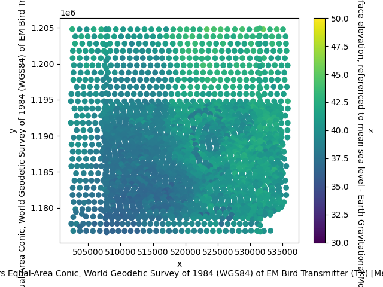
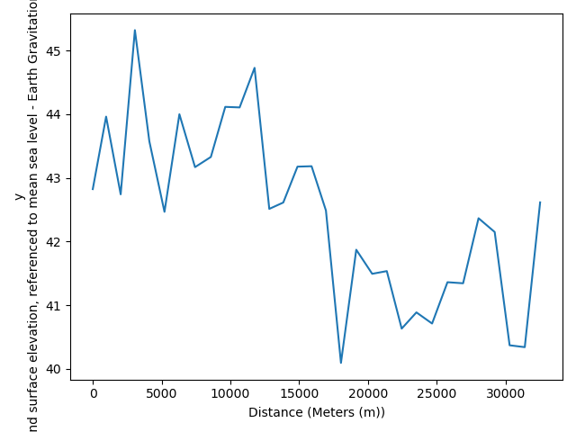
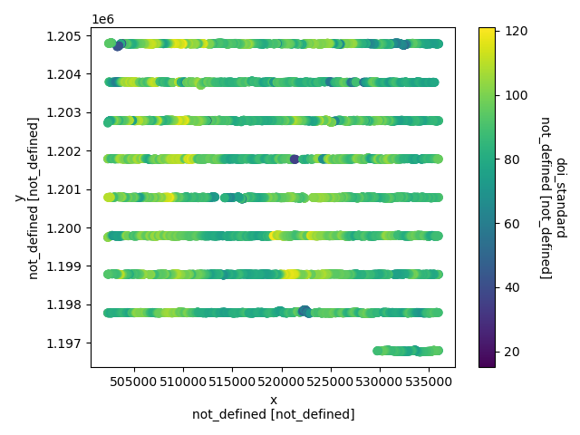

Note
Go to the end to download the full example code.
CSV (Resolve AEM)
This example demonstrates how to convert comma-separated values (CSV) data to the GS NetCDF format. Specifically this example includes:
Raw data
electromagnetic data, Resolve frequency-domain airborne electromagnetic (AEM) data
magnetic data
radiometric data
Inverted resistivity models
This example also demonstrates how to read metadata from different formats (YAML and CSV), and includes examples of electromagnetic, magnetic, and radiometric systems.
Source Reference: Burton, B.L., Minsley, B.J., Bloss, B.R., Rigby, J.R., Kress, W.H., and Smith, B.D., 2019, Airborne electromagnetic, magnetic, and radiometric survey, Shellmound, Mississippi, March 2018 (ver. 2.0, March 2024): U.S. Geological Survey data release, https://doi.org/10.5066/P9D4EA9W.
import matplotlib.pyplot as plt
from os.path import join
import gspy
from gspy.metadata.Metadata import Metadata
from pprint import pprint
Initialize the Survey
# Path to example files
data_path = '..//data_files//resolve'
# Survey metadata file
metadata = join(data_path, "data//Resolve_survey_md.yml")
# Establish the Survey
survey = gspy.Survey.from_dict(metadata)
1dataset_attrs:
2 title: Example Resolve Airborne Electromagnetic (AEM) Raw Data
3 institution: USGS Geology, Geophysics, & Geochemistry Science Center
4 source: Comma-separated text file exported from Geosoft
5 history: see data release for full details
6 references: "Burton, B.L., Minsley, B.J., Bloss, B.R., Rigby, J.R., Kress, W.H., and Smith, B.D., 2019, Airborne electromagnetic, magnetic, and radiometric survey, Shellmound, Mississippi, March 2018 (ver. 2.0, March 2024): U.S. Geological Survey data release, https://doi.org/10.5066/P9D4EA9W."
7 comment: This dataset includes electromagnetic, radiometric, and magnetic data
8 content: Resolve survey information
9
10survey_information:
11 contractor_project_number: 603756RWA
12 contractor: CGG Canada Services Ltd.
13 client: U.S. Geological Survey
14 survey_type: electromagnetic
15 survey_area_name: Mississippi Alluvial Plain (MAP) Shellmound
16 state: MS
17 country: USA
18 acquisition_start: 20180220
19 acquisition_end: 20180304
20 dataset_created: 20180517
21
22survey_units:
23 time: seconds [s]
24 area: square meters [m^2]
25 distance: meters [m]
26 line_direction: degrees [deg]
27 frequency: Hertz [Hz]
28 electromagnetic_moment: Ampere square meters [Am^2]
29 electromagnetic_secondary_field: parts per million [ppm]
30 spectrometer_volume: liter [L]
31
32spatial_ref:
33 wkid: 5070
34 authority: EPSG
35
36flightline_information:
37 traverse_line_spacing: [993, 248]
38 traverse_line_direction: [92, 272]
39 tie_line_spacing: 23883,
40 tie_line_direction: [2, 182]
41 nominal_terrain_clearance: 30
42 final_line_kilometers: 2358,
43 traverse_line_numbers: 10010 - 11060
44 tie_line_numbers: 19010,19020
45
46survey_equipment:
47 aircraft: AS350 B2 Helicopter
48 aircraft_registration: C-FZTA
49 aircraft_operator: Questral Helicopters Ltd
50 magnetometer: Scintrex Cs-3 Cesium Vapour
51 magnetometer_installation: mounted in the EM bird
52 spectrometer_system: Radiation Solutions RS-500
53 spectrometer_installation: on board the helicopter
54 radar_altimeter_system: Honeywell Sperry Altimeter System
55 laser_altimeter_system: Optech ADMGPA100
56 navigation_system: NovAtel OEM4 Card with an Aero antenna mounted on the tail of the helicopter
57 acquisition_system: CGG HeliDAS
58 electromagnetic_system: RESOLVE, symmetric dipole configuration
59 electromagnetic_installation: 9 metre bird containing the EM transmitter and receiver coil pairs (five coplanar and one coaxial), one or two magnetometers, a laser altimeter and a GPS antenna for flight path recovery, is towed by helicopter using a 30 m cable.
Create a ‘data’ branch
Make the branch
data_container = survey.gs.add_container('data', **dict(content = "raw and processed data"))
Point to raw data CSV file
# Define input data file and associated metadata file
d_data = join(data_path, 'data//Resolve.csv')
Multiple Geophysical Systems & Metadata Formats
Import from MULTIPLE metadata files (YAML & CSV)
Metadata about the dataset and systems are in YAML format
d_supp = join(data_path, 'data//Resolve_data_md_without_variables.yml')
rd_meta = Metadata.read(d_supp)
1dataset_attrs:
2 content: raw data
3 comment: This dataset includes minimally processed (raw) AEM data
4 type: data
5 mode: airborne
6 method: electromagnetic, frequency domain
7 instrument: RESOLVE
8
9coordinates:
10 x: x_WGS84_Albers
11 y: y_WGS84_Albers
12 z: DTM
13
14resolve_system:
15 type: system
16 mode: airborne
17 method: electromagnetic, frequency domain
18 instrument: RESOLVE
19
20 dimensions:
21 channel:
22 centers: ['in-phase','quadrature']
23 standard_name: frequency_domain_complex_data
24 long_name: complex frequency domain data channel
25 units: not_defined
26 missing_value: not_defined
27 discrete: True
28 frequency:
29 standard_name: frequency
30 long_name: nominal measurement frequency
31 units: Hz
32 missing_value: not_defined
33 centers: [400, 1800, 3300, 8200, 40000, 140000]
34 discrete: True
35
36 variables:
37 data_normalized: True
38 output_data_type: ppm
39 reference_frame: right-handed positive up
40 output_sample_frequency: 10
41
42 transmitter:
43 label: [400Z, 1800Z, 3300X, 8200Z, 40000Z, 140000Z]
44 orientation: [z, z, x, z, z, z]
45
46 receiver:
47 label: [400Z, 1800Z, 3300X, 8200Z, 40000Z, 140000Z]
48 orientation: [z, z, x, z, z, z]
49
50 couplet:
51 transmitters: [400Z, 1800Z, 3300X, 8200Z, 40000Z, 140000Z]
52 receivers: [400Z, 1800Z, 3300X, 8200Z, 40000Z, 140000Z]
53 txrx_dx: [7.93, 7.95, 9.06, 7.93, 7.92, 7.97]
54 txrx_dy: [0, 0, 0, 0, 0, 0]
55 txrx_dz: [0, 0, 0, 0, 0, 0]
56 orientation: [coplanar, coplanar, coaxial, coplanar, coplanar, coplanar]
57 actual_frequency: [381, 1829, 3385, 8261, 40430, 133400]
58 moment: [359, 187, 150, 72, 49, 17]
59
60magnetic_system:
61 type: system
62 mode: airborne
63 method: magnetic
64 instrument: Scintrex CS-3 cesium-vapor magnetometer
65
66 prefixes: ['base_magnetometer']
67
68 variables:
69
70 transmitter:
71 label: passive
72 description: "No artificial transmitter was used; the magnetic system measures the Earth's natural field (passive field)."
73
74 receiver:
75 label: scalar_magnetometer
76 sensor_type: cesium_vapor
77 sensor_model: CS-3
78 sensor_manufacturer: Scintrex
79 description: Scalar cesium-vapor magnetometer mounted in the RESOLVE EM bird towed beneath an AS350 B2 helicopter. Digital acquisition via CGG HeliDAS; positioning with NovAtel OEM4 GPS on helicopter and bird.
80 coordinates: not_defined
81 orientation: em-bird mounted
82 acquisition_system: CGG HeliDAS survey computer; NovAtel OEM4 GPS (WAAS-enabled) for navigation and synchronization; EM bird GPS OEM4 for positional data.
83 sample_frequency:
84 values: 10.0
85 units: Hz
86 sensitivity:
87 values: 0.001
88 units: nT
89 accuracy:
90 values: 0.002
91 units: nT
92 typical_noise:
93 values: 1.0
94 units: nT
95 sensor_height:
96 values: 42
97 units: m
98 lag_factor:
99 values: 1.8
100 units: s
101 fom_pitch: not_defined
102 fom_roll: not_defined
103 fom_yaw: not_defined
104 fom_sum: not_defined
105
106 couplet:
107 transmitters: [passive]
108 receivers: [scalar_magnetometer]
109 description: Passive Earth-field transmitter paired with single scalar magnetometer receiver mounted in the RESOLVE EM bird.
110
111 base_magnetometer:
112 label: base_magnetometer
113 description: Ground magnetic base stations were set-up to measure the total intensity of the earth's magnetic field. The base stations were placed in a magnetically quiet area, away from power lines and moving metallic objects. The contracted specification for the collected ground magnetic data was the non-linear variations in the magnetic data were not to exceed 5 nT per 5 minute period. Pulsations having periods of 5 minutes or less shall not exceed 2 nT, pulsations having periods between 5 and 10 minutes shall not exceed 4 nT, and pulsations having periods between 10 and 20 minutes shall not exceed 8 nT.
114 sensor_type: CGG CF1 using Scintrex cesium vapour sensor with Marconi GPS card and antenna for measurement synchronization to GPS
115 sample_frequency:
116 values: 1
117 units: s
118 secondary_sensor_model: GEM GSM-19
119 secondary_sensor_sample_frequency: 0.33 per sec
120 secondary_sensor_accuracy: 0.2 nT
121 secondary_sensor_precision: 0.01 nT
122 location_names: Greenwood, MS
123 setup_dates: 2018-02-20 to 2018-03-05
124 latitude:
125 values: "33 29 50.6815N"
126 units: degrees minutes seconds
127 longitude:
128 values: "90 04 44.7918 W"
129 units: degrees minutes seconds
130 ellipsoidal_height:
131 values: 20.643
132 units: m
133
134 dynamic_compensation: Heading test performed with passes in magnetic N,S,E,W; heading errors within acceptable limits (e.g., N-S ~0.2-0.8 nT; E-W up to ~0.5-1.0 nT), indicating low aircraft-induced magnetic noise.
135 diurnal_correction: Diurnal variation extracted from base station records (1 Hz), filtered (51 s median + 51 s Hanning), interpolated to 10 Hz, and applied to airborne TMF; a local regional field value of 49,405 nT (from first day's average) was removed prior to RMI calculation.
136 microlevelling: Microlevelling applied after tie-line levelling
137 lag_correction: Lag of 1.8 s applied to TMF based on lag test
138 igrf_model_location: "Greenwood, Mississippi (survey area)"
139 igrf_model_date: "2018-11-15/2019-02-18"
140 igrf_model_height: sensor altitude 42 m above ground level
141 igrf_removed_model_epoch: "2015.0"
142 tieline_levelling: Magnetic data were levelled using tie/traverse intercepts, manual adjustments where needed, and microlevelling applied to produce final RMI/TMI products.
143 altitude_correction: none
144 deliverables: Total Magnetic Intensity (TMI), Residual Magnetic Intensity (RMI), and Calculated Vertical Magnetic Gradient (CVG), provided with ancillary EM & terrain data.
145
146
147radiometric_system:
148 type: system
149 mode: airborne
150 method: gamma spectrometry
151 instrument: Radiation Solutions RS-500 gamma-ray spectrometer
152
153 dimensions:
154 spec_sample:
155 standard_name: spec_sample
156 long_name: radiometric sample
157 units: not_defined
158 missing_value: not_defined
159 length: 256
160 increment: 1
161 origin: 0
162 discrete: True
163
164 variables:
165
166 transmitter:
167 label: passive
168 description: No artificial radiation source was used; the system measures naturally occurring gamma radiation from potassium-40, uranium and thorium decay series, and total count.
169
170 receiver:
171 label: gamma_spectrometer
172 sensor_type: NaI(Tl) scintillation crystals
173 sensor_model: RS-500
174 sensor_manufacturer: Radiation Solutions Inc.
175 description: Airborne gamma-ray spectrometer consisting of one downward-looking NaI(Tl) detector pack (16.8 liters) and one upward-looking detector (4.2 liters), mounted in the helicopter cabin. Measures total count, potassium, uranium, thorium, and upward-uranium windows. Includes embedded live-time electronics for dead-time correction.
176 crystal_type: NaI(Tl)
177 operating_range:
178 values: "0 to 100000"
179 units: counts_per_second
180 operating_limits:
181 values: "-20 to +50"
182 units: temperature, degrees Celsius
183 sample_frequency:
184 values: 1.0
185 units: Hz
186 downward_volume:
187 values: 16.8
188 units: liters
189 upward_volume:
190 values: 4.2
191 units: liters
192 spectrometer_TC_win: not_defined
193 spectrometer_K_win: not_defined
194 spectrometer_Th_win: not_defined
195 spectrometer_U_win: not_defined
196 spectrometer_cosmic_win: not_defined
197 K_index_start: not_defined
198 K_index_end: not_defined
199 Th_index_start: not_defined
200 Th_index_end: not_defined
201 U_index_start: not_defined
202 U_index_end: not_defined
203 TC_index_start: not_defined
204 TC_index_end: not_defined
205 cosmic_index_start: not_defined
206 cosmic_index_end: not_defined
207 UU_index_start: not_defined
208 UU_index_end: not_defined
209
210 couplet:
211 transmitters: [passive]
212 receivers: [gamma_spectrometer]
213 description: Passive gamma-ray field paired with dual-detector RS-500 spectrometer for downward and upward radiation measurements.
214
215 down_livetime_or_deadtime_corrected: livetime
216 up_livetime_or_deadtime_corrected: livetime
217 lowpass_filtering: Hanning smoothing; cosmic=9-pt, radar/temp/pressure=3-pt; upward-U=51-pt (radon processing)
218 lowpass_filtering_fid_cutoff_cosmic: 9
219
220 lowpass_filtering_fid_cutoff_TC: not_defined
221 lowpass_filtering_fid_cutoff_K: not_defined
222 lowpass_filtering_fid_cutoff_Th: not_defined
223 lowpass_filtering_fid_cutoff_U: not_defined
224 lowpass_filtering_fid_cutoff_altimeter: 3
225
226 background_parameter_aircraft_TC: 19.43
227 background_parameter_aircraft_K: 2.61
228 background_parameter_aircraft_Th: -0.48
229 background_parameter_aircraft_U: -1.94
230 background_parameter_aircraft_UU: 0.50
231
232 background_parameter_cosmic_TC: 1.2442
233 background_parameter_cosmic_K: 0.0744
234 background_parameter_cosmic_Th: 0.0656
235 background_parameter_cosmic_U: 0.0528
236 background_parameter_cosmic_UU: 0.0140
237
238 radon_background_correction_method: "Upward Detector Method (hover site calibration)"
239 radon_background_correction_up_method_A1: not_defined
240 radon_background_correction_up_method_A2: not_defined
241
242 compton_stripping_ratio_alpha: 0.2820
243 compton_stripping_ratio_beta: 0.4090
244 compton_stripping_ratio_gamma: 0.7680
245 compton_stripping_ratio_a: 0.0460
246 compton_stripping_ratio_b: 0.0040
247 compton_stripping_ratio_g: 0.0070
248 compton_stripping_nominal_altitude:
249 values: 60
250 units: m
251
252 height_attenuation_coefficient_TC: -0.008250
253 height_attenuation_coefficient_K: -0.012530
254 height_attenuation_coefficient_U: -0.004400
255 height_attenuation_coefficient_Th: -0.007170
256
257 source_sensitivity_factor_TC: not_defined
258 source_sensitivity_factor_K: 81.1
259 source_sensitivity_factor_Th: 4.9
260 source_sensitivity_factor_U: 8.0
261
262 air_absorbed_dose_rate: 25.42
263 natural_dose_rate_components: "13.07, 5.675, 2.494"
264
265 corrections: Radiometric corrections include cosmic and aircraft background stripping, radon-background removal, altitude attenuation correction to 60 m nominal, Compton stripping, and conversion to ground concentrations. Live time measured electronically (in ms) and applied to correct all radiometric windows (TC, K, U, Th, UpU) to true count rates using the relationship C_lt = (1000 * C_raw) / L.
266 calibration_pads: Stripping ratios and coefficients determined by Radiation Solutions using RS-500 calibration pads prior to survey start.
267 cosmic_calibration: High-altitude passes (7,500-10,000 ft AGL at 500 ft intervals) collected to determine cosmic and aircraft background coefficients.
268 height_attenuation: Calibration lines flown at 30-150 m above ground on a repeat test line used to determine attenuation coefficients for each window.
269 radon_correction: Upward-looking detector smoothed (51-pt Hanning) to derive radon component; radon stripped from downward uranium then propagated to other windows.
270 prefiltering: Radar altimeter, pressure, temperature smoothed with 3-pt Hanning; cosmic channel smoothed with 9-pt Hanning before corrections applied.
271 compton_stripping: Height-corrected Compton coefficients (alpha, beta, gamma) applied for inter-window spectral overlap using altitude-dependent adjustments.
272 altitude_attenuation_correction: "nominal_height 60 m"
273 conversion_to_concentrations: Corrected K, U, Th windows converted to apparent concentrations using system sensitivities (S-factors), and dose rate computed from K, eU, eTh using reported coefficients.
274 radiometric_ratios: Ratios (eU/eTh, eU/K, eTh/K) calculated following IAEA TR-323 guidelines, using summed neighborhood windows to stabilize low-count data.
275 deliverables: Total Count, Potassium (%K), Equivalent Uranium (eU ppm), Equivalent Thorium (eTh ppm), Air Absorbed Dose Rate (nGy/h), upward-looking spectrum, downward-looking spectrum, and derived radiometric ratios.
276
277dimensions:
278 layer_depth:
279 standard_name: layer_depth
280 long_name: layer depth below surface
281 units: meters
282 missing_value: not_defined
283 length: 31
284 increment: 5.0
285 origin: 2.5
286 axis: Z
287 positive: down
288 datum: ground surface
Variable metadata are in a CSV table
Pass the flag ‘table=True’ for this specific metadata format
var_md = join(data_path, 'data//Resolve_variable_table_md.csv')
var_meta = Metadata.read(var_md, table=True)
(scroll left right to see the full table)
variable_name |
standard_name |
long_name |
units |
missing_value |
dtype |
raw_data_columns |
dimensions |
datum |
positive |
system_couplet |
|---|---|---|---|---|---|---|---|---|---|---|
line |
Line Number |
# |
||||||||
date |
Date of the survey |
YYYYMMDD |
||||||||
utc_time |
Time, seconds after midnight UTC |
Seconds (s) |
-9999 |
|||||||
flight |
Flight numer on which the data were collected |
# |
||||||||
fiducial |
Unique Fiducial Number |
n/a |
||||||||
temp_ext |
External temperature |
Degrees Celsius (C) |
||||||||
kpa |
External pressure |
kiloPascals (kPa) |
||||||||
x_WGS84_Albers |
Easting in Albers Equal-Area Conic, World Geodetic Survey of 1984 (WGS84) of EM Bird Transmitter (TX) |
Meters (m) |
||||||||
y_WGS84_Albers |
Northing in Albers Equal-Area Conic, World Geodetic Survey of 1984 (WGS84) of EM Bird Transmitter (TX) |
Meters (m) |
||||||||
x_WGS84_UTMZ15N |
Easting in Universal Transverse Mercator (UTM) Zone 15 North, World Geodetic Survey of 1984 (WGS84) of EM Bird Transmitter (TX) |
Meters (m) |
||||||||
y_WGS84_UTMZ15N |
Northing in Universal Transverse Mercator (UTM) Zone 15 North, World Geodetic Survey of 1984 (WGS84) of EM bird transmitter (Tx) |
Meters (m) |
||||||||
lat_tx |
Latitude, WGS84, of EM bird transmitter (Tx) |
Decimal Degrees |
||||||||
lon_tx |
Longitude, WGS84, of EM bird transmitter (Tx) |
Decimal Degrees |
||||||||
lat_heli |
Latitude, WGS84, of helicopter |
Decimal Degrees |
||||||||
lon_heli |
Longitude, WGS84, of helicopter |
Decimal Degrees |
||||||||
gpsz_tx |
GPS elevation of EM bird transmitter (Tx), referenced to mean sea level - Earth Gravitational Model (EGM96) |
Meters (m) |
||||||||
gpsz_heli |
GPS elevation of helicopter, referenced to mean sea level - Earth Gravitational Model (EGM96) |
Meters (m) |
||||||||
altlas_tx |
Laser altimeter height of the EM bird transmitter (Tx) |
Meters (m) |
||||||||
altrad_heli |
RADAR altimeter of helicopter |
Meters (m) |
||||||||
effective_height |
Height of helicopter at standard temperature and pressure |
Meters (m) |
||||||||
DTM |
Digital terrain model (ground surface elevation, referenced to mean sea level - Earth Gravitational Model (EGM96)) |
Meters (m) |
referenced to mean sea level - Earth Gravitational Model (EGM96) |
up |
||||||
bird_pitch |
EM bird transmitter (Tx) pitch |
Degrees |
||||||||
bird_roll |
EM bird transmitter (Tx) roll |
Degrees |
||||||||
bird_yaw |
EM bird transmitter (Tx) yaw (heading) |
Degrees |
||||||||
diurnal |
Measured base station ground magnetic intensity |
nanoteslas (nT) |
-9999 |
|||||||
diurnal_cor |
Diurnal correction, base removed |
nanoteslas (nT) |
||||||||
mag_raw |
Total magnetic field, de-spiked |
nanoteslas (nT) |
passive_scalar_magnetometer |
|||||||
mag_L |
Total magnetic field, lagged |
nanoteslas (nT) |
passive_scalar_magnetometer |
|||||||
mag_LD |
Total magnetic field, lagged and diurnally corrected |
nanoteslas (nT) |
passive_scalar_magnetometer |
|||||||
IGRF |
International Geomagnetic Reference Field |
nanoteslas (nT) |
||||||||
TMI |
Total magnetic intensity |
nanoteslas (nT) |
passive_scalar_magnetometer |
|||||||
RMI |
Final residual magnetic intensity |
nanoteslas (nT) |
passive_scalar_magnetometer |
|||||||
cpsp |
Co-planar spherics monitor |
n/a |
||||||||
cxsp |
Co-axial spherics monitor |
n/a |
||||||||
powerline |
Co-planar power line monitor |
n/a |
||||||||
400hz_filtered |
400 Hz EM frequency data, spherics rejected |
parts per million (ppm) |
[cpi400_filt, cpq400_filt] |
[index, channel] |
400Z_400Z |
|||||
1800hz_filtered |
1800 Hz EM frequency data, spherics rejected |
parts per million (ppm) |
[cpi1800_filt, cpq1800_filt] |
[index, channel] |
1800Z_1800Z |
|||||
3300hz_filtered |
3300 Hz EM frequency data, spherics rejected |
parts per million (ppm) |
[cxi3300_filt, cxq3300_filt] |
[index, channel] |
3300X_3300X |
|||||
8200hz_filtered |
8200 Hz EM frequency data, spherics rejected |
parts per million (ppm) |
[cpi8200_filt, cpq8200_filt] |
[index, channel] |
8200Z_8200Z |
|||||
40k_hz_filtered |
40k Hz EM frequency data, spherics rejected |
parts per million (ppm) |
[cpi40k_filt, cpq40k_filt] |
[index, channel] |
40000Z_40000Z |
|||||
140k_hz_filtered |
140k Hz EM frequency data, spherics rejected |
parts per million (ppm) |
[cpi140k_filt, cpq140k_filt] |
[index, channel] |
140000Z_140000Z |
|||||
400hz_pgadj |
400hz_phase_gain_adj |
400 Hz EM frequency data, phase and gain adjusted |
parts per million (ppm) |
[cpi400_phg, cpq400_phg] |
[index, channel] |
400Z_400Z |
||||
1800hz_pgadj |
1800hz_phase_gain_adj |
1800 Hz EM frequency data, phase and gain adjusted |
parts per million (ppm) |
[cpi1800_phg, cpq1800_phg] |
[index, channel] |
1800Z_1800Z |
||||
3300hz_pgadj |
3300hz_phase_gain_adj |
3300 Hz EM frequency data, phase and gain adjusted |
parts per million (ppm) |
[cxi3300_phg, cxq3300_phg] |
[index, channel] |
3300X_3300X |
||||
8200hz_pgadj |
8200hz_phase_gain_adj |
8200 Hz EM frequency data, phase and gain adjusted |
parts per million (ppm) |
[cpi8200_phg, cpq8200_phg] |
[index, channel] |
8200Z_8200Z |
||||
40k_hz_pgadj |
400hz_phase_gain_adj |
40k Hz EM frequency data, phase and gain adjusted |
parts per million (ppm) |
[cpi40k_phg, cpq40k_phg] |
[index, channel] |
40000Z_40000Z |
||||
140k_hz_pgadj |
140k_hz_phase_gain_adj |
140k Hz EM frequency data, phase and gain adjusted |
parts per million (ppm) |
[cpi140k_phg, cpq140k_phg] |
[index, channel] |
140000Z_140000Z |
||||
400hz_final |
400 Hz EM frequency data, final levelled |
parts per million (ppm) |
[cpi400, cpq400] |
[index, channel] |
400Z_400Z |
|||||
1800hz_final |
1800 Hz EM frequency data, final levelled |
parts per million (ppm) |
[cpi1800, cpq1800] |
[index, channel] |
1800Z_1800Z |
|||||
3300hz_final |
3300 Hz EM frequency data, final levelled |
parts per million (ppm) |
[cxi3300, cxq3300] |
[index, channel] |
3300X_3300X |
|||||
8200hz_final |
8200 Hz EM frequency data, final levelled |
parts per million (ppm) |
[cpi8200, cpq8200] |
[index, channel] |
8200Z_8200Z |
|||||
40k_hz_final |
40k Hz EM frequency data, final levelled |
parts per million (ppm) |
[cpi40k, cpq40k] |
[index, channel] |
40000Z_40000Z |
|||||
140k_hz_final |
140k Hz EM frequency data, final levelled |
parts per million (ppm) |
[cpi140k, cpq140k] |
[index, channel] |
140000Z_140000Z |
|||||
ddep140k |
Differential depth 140,000 MHz |
Meters (m) |
||||||||
ddep40k |
Differential depth 40,000 MHz |
Meters (m) |
||||||||
ddep8200 |
Differential depth 8,200 MHz |
Meters (m) |
||||||||
ddep1800 |
Differential depth 1,800 MHz |
Meters (m) |
||||||||
ddep400 |
Differential depth 400 MHz |
Meters (m) |
||||||||
dep140k |
Apparent depth 140,000 MHz |
Meters (m) |
||||||||
dep40k |
Apparent depth 40,000 MHz |
Meters (m) |
||||||||
dep8200 |
Apparent depth 8,200 MHz |
Meters (m) |
||||||||
dep1800 |
Apparent depth 1,800 MHz |
Meters (m) |
||||||||
dep400 |
Apparent depth 400 MHz |
Meters (m) |
-9999 |
|||||||
dres140k |
Differential resistivity 140,000 MHz |
Ohm-meters (ohm-m) |
||||||||
dres40k |
Differential resistivity 40,000 MHz |
Ohm-meters (ohm-m) |
||||||||
dres8200 |
Differential resistivity 8,200 MHz |
Ohm-meters (ohm-m) |
||||||||
dres1800 |
Differential resistivity 1,800 MHz |
Ohm-meters (ohm-m) |
||||||||
dres400 |
Differential resistivity 400 MHz |
Ohm-meters (ohm-m) |
||||||||
dres_150_by5m |
Differental resistivity from surface to a depth of 150m by 5m intervals |
Ohm-meters (ohm-m) |
-9999 |
[index,layer_depth] |
||||||
res140k |
Apparent resistivity 140,000 MHz |
Ohm-meters (ohm-m) |
||||||||
res40k |
Apparent resistivity 40,000 MHz |
Ohm-meters (ohm-m) |
||||||||
res8200 |
Apparent resistivity 8,200 MHz |
Ohm-meters (ohm-m) |
||||||||
res1800 |
Apparent resistivity 1,800 MHz |
Ohm-meters (ohm-m) |
||||||||
res400 |
Apparent resistivity 400 MHz |
Ohm-meters (ohm-m) |
||||||||
cosmic |
Cosmic, uncorrected |
n/a |
-9999 |
passive_gamma_spectrometer |
||||||
doserate |
Total gamma dose rate |
nanoGray/hour (nGy/h) |
-9999 |
passive_gamma_spectrometer |
||||||
live_time |
relative period of time spectrometer registers new pulses per sample interval |
Milliseconds (ms) |
-9999 |
passive_gamma_spectrometer |
||||||
spec256_down |
Full downward-looking radiometric spectrum |
Counts/second (cps) |
-9999 |
[index, spec_sample] |
passive_gamma_spectrometer |
|||||
spec256_up |
Full upward-looking radiometric spectrum |
Counts/second (cps) |
-9999 |
[index, spec_sample] |
passive_gamma_spectrometer |
|||||
tc_raw |
Total radiometric count, uncorrrected |
Counts/second (cps) |
-9999 |
passive_gamma_spectrometer |
||||||
th_raw |
Thorium, uncorrected |
Counts/second (cps) |
-9999 |
passive_gamma_spectrometer |
||||||
u_raw |
Uranium, uncorrected |
Counts/second (cps) |
-9999 |
passive_gamma_spectrometer |
||||||
u_up_raw |
Upward-looking uranium, uncorrected |
Counts/second (cps) |
-9999 |
passive_gamma_spectrometer |
||||||
k_raw |
Potassium concentration, uncorrected |
Counts/second (cps) |
-9999 |
passive_gamma_spectrometer |
||||||
eth |
Equivalent thorium concentration |
Parts per million (ppm) |
-9999 |
passive_gamma_spectrometer |
||||||
eu |
Equivalent uranium concentration |
Parts per million (ppm) |
-9999 |
passive_gamma_spectrometer |
||||||
kconc |
Potassium concentration |
Percentage |
-9999 |
passive_gamma_spectrometer |
||||||
eth_kconc |
Equivalent thorium over potassium concentration |
ppm / percent |
-9999 |
passive_gamma_spectrometer |
||||||
eu_eth |
Equivalent uranium over equivalent thorium |
ppm/ppm |
-9999 |
passive_gamma_spectrometer |
||||||
eu_kconc |
Equivalent uranium over potassium concentration |
ppm / percent |
-9999 |
passive_gamma_spectrometer |
Merge the two metadata and pass it all through for the raw AEM data.
md = Metadata.merge(rd_meta, var_meta)
# Add the raw AEM data
rd = data_container.gs.add(key='raw_data', data=d_data, metadata_file=md)
View the merged Metadata to see how the information was imported
pprint(md)
{'coordinates': {'x': 'x_WGS84_Albers', 'y': 'y_WGS84_Albers', 'z': 'DTM'},
'dataset_attrs': {'comment': 'This dataset includes minimally processed (raw) '
'AEM data',
'content': 'raw data',
'instrument': 'RESOLVE',
'method': 'electromagnetic, frequency domain',
'mode': 'airborne',
'type': 'data'},
'dimensions': {'layer_depth': {'axis': 'Z',
'datum': 'ground surface',
'increment': 5.0,
'length': 31,
'long_name': 'layer depth below surface',
'missing_value': 'not_defined',
'origin': 2.5,
'positive': 'down',
'standard_name': 'layer_depth',
'units': 'meters'}},
'directory': '..//data_files//resolve/data',
'magnetic_system': {'instrument': 'Scintrex CS-3 cesium-vapor magnetometer',
'method': 'magnetic',
'mode': 'airborne',
'prefixes': ['base_magnetometer'],
'type': 'system',
'variables': {'altitude_correction': 'none',
'base_magnetometer': {'description': 'Ground '
'magnetic '
'base '
'stations '
'were '
'set-up '
'to '
'measure '
'the '
'total '
'intensity '
'of '
'the '
"earth's "
'magnetic '
'field. '
'The '
'base '
'stations '
'were '
'placed '
'in a '
'magnetically '
'quiet '
'area, '
'away '
'from '
'power '
'lines '
'and '
'moving '
'metallic '
'objects. '
'The '
'contracted '
'specification '
'for '
'the '
'collected '
'ground '
'magnetic '
'data '
'was '
'the '
'non-linear '
'variations '
'in '
'the '
'magnetic '
'data '
'were '
'not '
'to '
'exceed '
'5 nT '
'per 5 '
'minute '
'period. '
'Pulsations '
'having '
'periods '
'of 5 '
'minutes '
'or '
'less '
'shall '
'not '
'exceed '
'2 nT, '
'pulsations '
'having '
'periods '
'between '
'5 and '
'10 '
'minutes '
'shall '
'not '
'exceed '
'4 nT, '
'and '
'pulsations '
'having '
'periods '
'between '
'10 '
'and '
'20 '
'minutes '
'shall '
'not '
'exceed '
'8 nT.',
'ellipsoidal_height': {'dimensions': 'n_base_magnetometer',
'units': 'm',
'values': 20.643},
'latitude': {'dimensions': 'n_base_magnetometer',
'units': 'degrees '
'minutes '
'seconds',
'values': '33 '
'29 '
'50.6815N'},
'location_names': 'Greenwood, '
'MS',
'longitude': {'dimensions': 'n_base_magnetometer',
'units': 'degrees '
'minutes '
'seconds',
'values': '90 '
'04 '
'44.7918 '
'W'},
'sample_frequency': {'dimensions': 'n_base_magnetometer',
'units': 's',
'values': 1},
'secondary_sensor_accuracy': '0.2 '
'nT',
'secondary_sensor_model': 'GEM '
'GSM-19',
'secondary_sensor_precision': '0.01 '
'nT',
'secondary_sensor_sample_frequency': '0.33 '
'per '
'sec',
'sensor_type': 'CGG '
'CF1 '
'using '
'Scintrex '
'cesium '
'vapour '
'sensor '
'with '
'Marconi '
'GPS '
'card '
'and '
'antenna '
'for '
'measurement '
'synchronization '
'to '
'GPS',
'setup_dates': '2018-02-20 '
'to '
'2018-03-05'},
'couplet': {'description': 'Passive '
'Earth-field '
'transmitter '
'paired with '
'single scalar '
'magnetometer '
'receiver '
'mounted in the '
'RESOLVE EM '
'bird.',
'receivers': ['scalar_magnetometer'],
'transmitters': ['passive']},
'deliverables': 'Total Magnetic Intensity '
'(TMI), Residual Magnetic '
'Intensity (RMI), and '
'Calculated Vertical '
'Magnetic Gradient (CVG), '
'provided with ancillary EM '
'& terrain data.',
'diurnal_correction': 'Diurnal variation '
'extracted from base '
'station records (1 '
'Hz), filtered (51 s '
'median + 51 s '
'Hanning), '
'interpolated to 10 '
'Hz, and applied to '
'airborne TMF; a '
'local regional field '
'value of 49,405 nT '
"(from first day's "
'average) was removed '
'prior to RMI '
'calculation.',
'dynamic_compensation': 'Heading test '
'performed with '
'passes in magnetic '
'N,S,E,W; heading '
'errors within '
'acceptable limits '
'(e.g., N-S '
'~0.2-0.8 nT; E-W '
'up to ~0.5-1.0 '
'nT), indicating '
'low '
'aircraft-induced '
'magnetic noise.',
'igrf_model_date': '2018-11-15/2019-02-18',
'igrf_model_height': 'sensor altitude 42 m '
'above ground level',
'igrf_model_location': 'Greenwood, '
'Mississippi (survey '
'area)',
'igrf_removed_model_epoch': '2015.0',
'lag_correction': 'Lag of 1.8 s applied to '
'TMF based on lag test',
'microlevelling': 'Microlevelling applied '
'after tie-line levelling',
'receiver': {'accuracy': {'dimensions': 'n_receiver',
'units': 'nT',
'values': 0.002},
'acquisition_system': 'CGG '
'HeliDAS '
'survey '
'computer; '
'NovAtel '
'OEM4 '
'GPS '
'(WAAS-enabled) '
'for '
'navigation '
'and '
'synchronization; '
'EM bird '
'GPS '
'OEM4 '
'for '
'positional '
'data.',
'coordinates': 'not_defined',
'description': 'Scalar '
'cesium-vapor '
'magnetometer '
'mounted in the '
'RESOLVE EM '
'bird towed '
'beneath an '
'AS350 B2 '
'helicopter. '
'Digital '
'acquisition '
'via CGG '
'HeliDAS; '
'positioning '
'with NovAtel '
'OEM4 GPS on '
'helicopter and '
'bird.',
'fom_pitch': 'not_defined',
'fom_roll': 'not_defined',
'fom_sum': 'not_defined',
'fom_yaw': 'not_defined',
'lag_factor': {'dimensions': 'n_receiver',
'units': 's',
'values': 1.8},
'orientation': 'em-bird '
'mounted',
'sample_frequency': {'dimensions': 'n_receiver',
'units': 'Hz',
'values': 10.0},
'sensitivity': {'dimensions': 'n_receiver',
'units': 'nT',
'values': 0.001},
'sensor_height': {'dimensions': 'n_receiver',
'units': 'm',
'values': 42},
'sensor_manufacturer': 'Scintrex',
'sensor_model': 'CS-3',
'sensor_type': 'cesium_vapor',
'typical_noise': {'dimensions': 'n_receiver',
'units': 'nT',
'values': 1.0}},
'tieline_levelling': 'Magnetic data were '
'levelled using '
'tie/traverse '
'intercepts, manual '
'adjustments where '
'needed, and '
'microlevelling '
'applied to produce '
'final RMI/TMI '
'products.',
'transmitter': {'description': 'No '
'artificial '
'transmitter '
'was used; '
'the '
'magnetic '
'system '
'measures '
"the Earth's "
'natural '
'field '
'(passive '
'field).'}}},
'radiometric_system': {'dimensions': {'spec_sample': {'discrete': True,
'increment': 1,
'length': 256,
'long_name': 'radiometric '
'sample',
'missing_value': 'not_defined',
'origin': 0,
'standard_name': 'spec_sample',
'units': 'not_defined'}},
'instrument': 'Radiation Solutions RS-500 gamma-ray '
'spectrometer',
'method': 'gamma spectrometry',
'mode': 'airborne',
'type': 'system',
'variables': {'air_absorbed_dose_rate': 25.42,
'altitude_attenuation_correction': 'nominal_height '
'60 m',
'background_parameter_aircraft_K': 2.61,
'background_parameter_aircraft_TC': 19.43,
'background_parameter_aircraft_Th': -0.48,
'background_parameter_aircraft_U': -1.94,
'background_parameter_aircraft_UU': 0.5,
'background_parameter_cosmic_K': 0.0744,
'background_parameter_cosmic_TC': 1.2442,
'background_parameter_cosmic_Th': 0.0656,
'background_parameter_cosmic_U': 0.0528,
'background_parameter_cosmic_UU': 0.014,
'calibration_pads': 'Stripping ratios '
'and coefficients '
'determined by '
'Radiation Solutions '
'using RS-500 '
'calibration pads '
'prior to survey '
'start.',
'compton_stripping': 'Height-corrected '
'Compton '
'coefficients '
'(alpha, beta, '
'gamma) applied for '
'inter-window '
'spectral overlap '
'using '
'altitude-dependent '
'adjustments.',
'compton_stripping_nominal_altitude': {'units': 'm',
'values': 60},
'compton_stripping_ratio_a': 0.046,
'compton_stripping_ratio_alpha': 0.282,
'compton_stripping_ratio_b': 0.004,
'compton_stripping_ratio_beta': 0.409,
'compton_stripping_ratio_g': 0.007,
'compton_stripping_ratio_gamma': 0.768,
'conversion_to_concentrations': 'Corrected '
'K, U, '
'Th '
'windows '
'converted '
'to '
'apparent '
'concentrations '
'using '
'system '
'sensitivities '
'(S-factors), '
'and '
'dose '
'rate '
'computed '
'from K, '
'eU, eTh '
'using '
'reported '
'coefficients.',
'corrections': 'Radiometric corrections '
'include cosmic and '
'aircraft background '
'stripping, '
'radon-background '
'removal, altitude '
'attenuation correction '
'to 60 m nominal, Compton '
'stripping, and '
'conversion to ground '
'concentrations. Live '
'time measured '
'electronically (in ms) '
'and applied to correct '
'all radiometric windows '
'(TC, K, U, Th, UpU) to '
'true count rates using '
'the relationship C_lt = '
'(1000 * C_raw) / L.',
'cosmic_calibration': 'High-altitude '
'passes '
'(7,500-10,000 ft '
'AGL at 500 ft '
'intervals) '
'collected to '
'determine cosmic '
'and aircraft '
'background '
'coefficients.',
'couplet': {'description': 'Passive '
'gamma-ray '
'field paired '
'with '
'dual-detector '
'RS-500 '
'spectrometer '
'for downward '
'and upward '
'radiation '
'measurements.',
'receivers': ['gamma_spectrometer'],
'transmitters': ['passive']},
'deliverables': 'Total Count, Potassium '
'(%K), Equivalent '
'Uranium (eU ppm), '
'Equivalent Thorium (eTh '
'ppm), Air Absorbed Dose '
'Rate (nGy/h), '
'upward-looking '
'spectrum, '
'downward-looking '
'spectrum, and derived '
'radiometric ratios.',
'down_livetime_or_deadtime_corrected': 'livetime',
'height_attenuation': 'Calibration lines '
'flown at 30-150 m '
'above ground on a '
'repeat test line '
'used to determine '
'attenuation '
'coefficients for '
'each window.',
'height_attenuation_coefficient_K': -0.01253,
'height_attenuation_coefficient_TC': -0.00825,
'height_attenuation_coefficient_Th': -0.00717,
'height_attenuation_coefficient_U': -0.0044,
'lowpass_filtering': 'Hanning smoothing; '
'cosmic=9-pt, '
'radar/temp/pressure=3-pt; '
'upward-U=51-pt '
'(radon processing)',
'lowpass_filtering_fid_cutoff_K': 'not_defined',
'lowpass_filtering_fid_cutoff_TC': 'not_defined',
'lowpass_filtering_fid_cutoff_Th': 'not_defined',
'lowpass_filtering_fid_cutoff_U': 'not_defined',
'lowpass_filtering_fid_cutoff_altimeter': 3,
'lowpass_filtering_fid_cutoff_cosmic': 9,
'natural_dose_rate_components': '13.07, '
'5.675, '
'2.494',
'prefiltering': 'Radar altimeter, '
'pressure, temperature '
'smoothed with 3-pt '
'Hanning; cosmic channel '
'smoothed with 9-pt '
'Hanning before '
'corrections applied.',
'radiometric_ratios': 'Ratios (eU/eTh, '
'eU/K, eTh/K) '
'calculated '
'following IAEA '
'TR-323 '
'guidelines, using '
'summed '
'neighborhood '
'windows to '
'stabilize '
'low-count data.',
'radon_background_correction_method': 'Upward '
'Detector '
'Method '
'(hover '
'site '
'calibration)',
'radon_background_correction_up_method_A1': 'not_defined',
'radon_background_correction_up_method_A2': 'not_defined',
'radon_correction': 'Upward-looking '
'detector smoothed '
'(51-pt Hanning) to '
'derive radon '
'component; radon '
'stripped from '
'downward uranium '
'then propagated to '
'other windows.',
'receiver': {'K_index_end': 'not_defined',
'K_index_start': 'not_defined',
'TC_index_end': 'not_defined',
'TC_index_start': 'not_defined',
'Th_index_end': 'not_defined',
'Th_index_start': 'not_defined',
'UU_index_end': 'not_defined',
'UU_index_start': 'not_defined',
'U_index_end': 'not_defined',
'U_index_start': 'not_defined',
'cosmic_index_end': 'not_defined',
'cosmic_index_start': 'not_defined',
'crystal_type': 'NaI(Tl)',
'description': 'Airborne '
'gamma-ray '
'spectrometer '
'consisting '
'of one '
'downward-looking '
'NaI(Tl) '
'detector '
'pack (16.8 '
'liters) and '
'one '
'upward-looking '
'detector '
'(4.2 '
'liters), '
'mounted in '
'the '
'helicopter '
'cabin. '
'Measures '
'total '
'count, '
'potassium, '
'uranium, '
'thorium, '
'and '
'upward-uranium '
'windows. '
'Includes '
'embedded '
'live-time '
'electronics '
'for '
'dead-time '
'correction.',
'downward_volume': {'dimensions': 'n_receiver',
'units': 'liters',
'values': 16.8},
'operating_limits': {'dimensions': 'n_receiver',
'units': 'temperature, '
'degrees '
'Celsius',
'values': '-20 '
'to '
'+50'},
'operating_range': {'dimensions': 'n_receiver',
'units': 'counts_per_second',
'values': '0 '
'to '
'100000'},
'sample_frequency': {'dimensions': 'n_receiver',
'units': 'Hz',
'values': 1.0},
'sensor_manufacturer': 'Radiation '
'Solutions '
'Inc.',
'sensor_model': 'RS-500',
'sensor_type': 'NaI(Tl) '
'scintillation '
'crystals',
'spectrometer_K_win': 'not_defined',
'spectrometer_TC_win': 'not_defined',
'spectrometer_Th_win': 'not_defined',
'spectrometer_U_win': 'not_defined',
'spectrometer_cosmic_win': 'not_defined',
'upward_volume': {'dimensions': 'n_receiver',
'units': 'liters',
'values': 4.2}},
'source_sensitivity_factor_K': 81.1,
'source_sensitivity_factor_TC': 'not_defined',
'source_sensitivity_factor_Th': 4.9,
'source_sensitivity_factor_U': 8.0,
'transmitter': {'description': 'No '
'artificial '
'radiation '
'source '
'was '
'used; '
'the '
'system '
'measures '
'naturally '
'occurring '
'gamma '
'radiation '
'from '
'potassium-40, '
'uranium '
'and '
'thorium '
'decay '
'series, '
'and '
'total '
'count.'},
'up_livetime_or_deadtime_corrected': 'livetime'}},
'resolve_system': {'dimensions': {'channel': {'centers': ['in-phase',
'quadrature'],
'discrete': True,
'long_name': 'complex frequency '
'domain data '
'channel',
'missing_value': 'not_defined',
'standard_name': 'frequency_domain_complex_data',
'units': 'not_defined'},
'frequency': {'centers': [400,
1800,
3300,
8200,
40000,
140000],
'discrete': True,
'long_name': 'nominal '
'measurement '
'frequency',
'missing_value': 'not_defined',
'standard_name': 'frequency',
'units': 'Hz'}},
'instrument': 'RESOLVE',
'method': 'electromagnetic, frequency domain',
'mode': 'airborne',
'type': 'system',
'variables': {'couplet': {'actual_frequency': [381,
1829,
3385,
8261,
40430,
133400],
'moment': [359,
187,
150,
72,
49,
17],
'orientation': ['coplanar',
'coplanar',
'coaxial',
'coplanar',
'coplanar',
'coplanar'],
'receivers': ['400Z',
'1800Z',
'3300X',
'8200Z',
'40000Z',
'140000Z'],
'transmitters': ['400Z',
'1800Z',
'3300X',
'8200Z',
'40000Z',
'140000Z'],
'txrx_dx': [7.93,
7.95,
9.06,
7.93,
7.92,
7.97],
'txrx_dy': [0, 0, 0, 0, 0, 0],
'txrx_dz': [0, 0, 0, 0, 0, 0]},
'data_normalized': True,
'output_data_type': 'ppm',
'output_sample_frequency': 10,
'receiver': {'orientation': ['z',
'z',
'x',
'z',
'z',
'z']},
'reference_frame': 'right-handed positive up',
'transmitter': {'orientation': ['z',
'z',
'x',
'z',
'z',
'z']}}},
'variables': {'140k_hz_filtered': {'dimensions': ['index', 'channel'],
'long_name': '140k Hz EM frequency data, '
'spherics rejected',
'missing_value': 'not_defined',
'raw_data_columns': ['cpi140k_filt',
'cpq140k_filt'],
'standard_name': '140k_hz_filtered',
'system_couplet': '140000Z_140000Z',
'units': 'parts per million (ppm)'},
'140k_hz_final': {'dimensions': ['index', 'channel'],
'long_name': '140k Hz EM frequency data, '
'final levelled',
'missing_value': 'not_defined',
'raw_data_columns': ['cpi140k', 'cpq140k'],
'standard_name': '140k_hz_final',
'system_couplet': '140000Z_140000Z',
'units': 'parts per million (ppm)'},
'140k_hz_pgadj': {'dimensions': ['index', 'channel'],
'long_name': '140k Hz EM frequency data, '
'phase and gain adjusted',
'missing_value': 'not_defined',
'raw_data_columns': ['cpi140k_phg',
'cpq140k_phg'],
'standard_name': '140k_hz_phase_gain_adj',
'system_couplet': '140000Z_140000Z',
'units': 'parts per million (ppm)'},
'1800hz_filtered': {'dimensions': ['index', 'channel'],
'long_name': '1800 Hz EM frequency data, '
'spherics rejected',
'missing_value': 'not_defined',
'raw_data_columns': ['cpi1800_filt',
'cpq1800_filt'],
'standard_name': '1800hz_filtered',
'system_couplet': '1800Z_1800Z',
'units': 'parts per million (ppm)'},
'1800hz_final': {'dimensions': ['index', 'channel'],
'long_name': '1800 Hz EM frequency data, final '
'levelled',
'missing_value': 'not_defined',
'raw_data_columns': ['cpi1800', 'cpq1800'],
'standard_name': '1800hz_final',
'system_couplet': '1800Z_1800Z',
'units': 'parts per million (ppm)'},
'1800hz_pgadj': {'dimensions': ['index', 'channel'],
'long_name': '1800 Hz EM frequency data, phase '
'and gain adjusted',
'missing_value': 'not_defined',
'raw_data_columns': ['cpi1800_phg',
'cpq1800_phg'],
'standard_name': '1800hz_phase_gain_adj',
'system_couplet': '1800Z_1800Z',
'units': 'parts per million (ppm)'},
'3300hz_filtered': {'dimensions': ['index', 'channel'],
'long_name': '3300 Hz EM frequency data, '
'spherics rejected',
'missing_value': 'not_defined',
'raw_data_columns': ['cxi3300_filt',
'cxq3300_filt'],
'standard_name': '3300hz_filtered',
'system_couplet': '3300X_3300X',
'units': 'parts per million (ppm)'},
'3300hz_final': {'dimensions': ['index', 'channel'],
'long_name': '3300 Hz EM frequency data, final '
'levelled',
'missing_value': 'not_defined',
'raw_data_columns': ['cxi3300', 'cxq3300'],
'standard_name': '3300hz_final',
'system_couplet': '3300X_3300X',
'units': 'parts per million (ppm)'},
'3300hz_pgadj': {'dimensions': ['index', 'channel'],
'long_name': '3300 Hz EM frequency data, phase '
'and gain adjusted',
'missing_value': 'not_defined',
'raw_data_columns': ['cxi3300_phg',
'cxq3300_phg'],
'standard_name': '3300hz_phase_gain_adj',
'system_couplet': '3300X_3300X',
'units': 'parts per million (ppm)'},
'400hz_filtered': {'dimensions': ['index', 'channel'],
'long_name': '400 Hz EM frequency data, '
'spherics rejected',
'missing_value': 'not_defined',
'raw_data_columns': ['cpi400_filt',
'cpq400_filt'],
'standard_name': '400hz_filtered',
'system_couplet': '400Z_400Z',
'units': 'parts per million (ppm)'},
'400hz_final': {'dimensions': ['index', 'channel'],
'long_name': '400 Hz EM frequency data, final '
'levelled',
'missing_value': 'not_defined',
'raw_data_columns': ['cpi400', 'cpq400'],
'standard_name': '400hz_final',
'system_couplet': '400Z_400Z',
'units': 'parts per million (ppm)'},
'400hz_pgadj': {'dimensions': ['index', 'channel'],
'long_name': '400 Hz EM frequency data, phase '
'and gain adjusted',
'missing_value': 'not_defined',
'raw_data_columns': ['cpi400_phg', 'cpq400_phg'],
'standard_name': '400hz_phase_gain_adj',
'system_couplet': '400Z_400Z',
'units': 'parts per million (ppm)'},
'40k_hz_filtered': {'dimensions': ['index', 'channel'],
'long_name': '40k Hz EM frequency data, '
'spherics rejected',
'missing_value': 'not_defined',
'raw_data_columns': ['cpi40k_filt',
'cpq40k_filt'],
'standard_name': '40k_hz_filtered',
'system_couplet': '40000Z_40000Z',
'units': 'parts per million (ppm)'},
'40k_hz_final': {'dimensions': ['index', 'channel'],
'long_name': '40k Hz EM frequency data, final '
'levelled',
'missing_value': 'not_defined',
'raw_data_columns': ['cpi40k', 'cpq40k'],
'standard_name': '40k_hz_final',
'system_couplet': '40000Z_40000Z',
'units': 'parts per million (ppm)'},
'40k_hz_pgadj': {'dimensions': ['index', 'channel'],
'long_name': '40k Hz EM frequency data, phase '
'and gain adjusted',
'missing_value': 'not_defined',
'raw_data_columns': ['cpi40k_phg',
'cpq40k_phg'],
'standard_name': '400hz_phase_gain_adj',
'system_couplet': '40000Z_40000Z',
'units': 'parts per million (ppm)'},
'8200hz_filtered': {'dimensions': ['index', 'channel'],
'long_name': '8200 Hz EM frequency data, '
'spherics rejected',
'missing_value': 'not_defined',
'raw_data_columns': ['cpi8200_filt',
'cpq8200_filt'],
'standard_name': '8200hz_filtered',
'system_couplet': '8200Z_8200Z',
'units': 'parts per million (ppm)'},
'8200hz_final': {'dimensions': ['index', 'channel'],
'long_name': '8200 Hz EM frequency data, final '
'levelled',
'missing_value': 'not_defined',
'raw_data_columns': ['cpi8200', 'cpq8200'],
'standard_name': '8200hz_final',
'system_couplet': '8200Z_8200Z',
'units': 'parts per million (ppm)'},
'8200hz_pgadj': {'dimensions': ['index', 'channel'],
'long_name': '8200 Hz EM frequency data, phase '
'and gain adjusted',
'missing_value': 'not_defined',
'raw_data_columns': ['cpi8200_phg',
'cpq8200_phg'],
'standard_name': '8200hz_phase_gain_adj',
'system_couplet': '8200Z_8200Z',
'units': 'parts per million (ppm)'},
'DTM': {'datum': 'referenced to mean sea level - Earth '
'Gravitational Model (EGM96)',
'long_name': 'Digital terrain model (ground surface '
'elevation, referenced to mean sea level - '
'Earth Gravitational Model (EGM96))',
'missing_value': 'not_defined',
'positive': 'up',
'standard_name': 'dtm',
'units': 'Meters (m)'},
'IGRF': {'long_name': 'International Geomagnetic Reference '
'Field',
'missing_value': 'not_defined',
'standard_name': 'igrf',
'units': 'nanoteslas (nT)'},
'RMI': {'long_name': 'Final residual magnetic intensity',
'missing_value': 'not_defined',
'standard_name': 'rmi',
'system_couplet': 'passive_scalar_magnetometer',
'units': 'nanoteslas (nT)'},
'TMI': {'long_name': 'Total magnetic intensity',
'missing_value': 'not_defined',
'standard_name': 'tmi',
'system_couplet': 'passive_scalar_magnetometer',
'units': 'nanoteslas (nT)'},
'altlas_tx': {'long_name': 'Laser altimeter height of the EM '
'bird transmitter (Tx)',
'missing_value': 'not_defined',
'standard_name': 'altlas_tx',
'units': 'Meters (m)'},
'altrad_heli': {'long_name': 'RADAR altimeter of helicopter',
'missing_value': 'not_defined',
'standard_name': 'altrad_heli',
'units': 'Meters (m)'},
'bird_pitch': {'long_name': 'EM bird transmitter (Tx) pitch',
'missing_value': 'not_defined',
'standard_name': 'bird_pitch',
'units': 'Degrees'},
'bird_roll': {'long_name': 'EM bird transmitter (Tx) roll',
'missing_value': 'not_defined',
'standard_name': 'bird_roll',
'units': 'Degrees'},
'bird_yaw': {'long_name': 'EM bird transmitter (Tx) yaw '
'(heading)',
'missing_value': 'not_defined',
'standard_name': 'bird_yaw',
'units': 'Degrees'},
'cosmic': {'long_name': 'Cosmic, uncorrected',
'missing_value': -9999,
'standard_name': 'cosmic',
'system_couplet': 'passive_gamma_spectrometer',
'units': 'n/a'},
'cpsp': {'long_name': 'Co-planar spherics monitor',
'missing_value': 'not_defined',
'standard_name': 'cpsp',
'units': 'n/a'},
'cxsp': {'long_name': 'Co-axial spherics monitor',
'missing_value': 'not_defined',
'standard_name': 'cxsp',
'units': 'n/a'},
'date': {'long_name': 'Date of the survey',
'missing_value': 'not_defined',
'standard_name': 'date',
'units': 'YYYYMMDD'},
'ddep140k': {'long_name': 'Differential depth 140,000 MHz',
'missing_value': 'not_defined',
'standard_name': 'ddep140k',
'units': 'Meters (m)'},
'ddep1800': {'long_name': 'Differential depth 1,800 MHz',
'missing_value': 'not_defined',
'standard_name': 'ddep1800',
'units': 'Meters (m)'},
'ddep400': {'long_name': 'Differential depth 400 MHz',
'missing_value': 'not_defined',
'standard_name': 'ddep400',
'units': 'Meters (m)'},
'ddep40k': {'long_name': 'Differential depth 40,000 MHz',
'missing_value': 'not_defined',
'standard_name': 'ddep40k',
'units': 'Meters (m)'},
'ddep8200': {'long_name': 'Differential depth 8,200 MHz',
'missing_value': 'not_defined',
'standard_name': 'ddep8200',
'units': 'Meters (m)'},
'dep140k': {'long_name': 'Apparent depth 140,000 MHz',
'missing_value': 'not_defined',
'standard_name': 'dep140k',
'units': 'Meters (m)'},
'dep1800': {'long_name': 'Apparent depth 1,800 MHz',
'missing_value': 'not_defined',
'standard_name': 'dep1800',
'units': 'Meters (m)'},
'dep400': {'long_name': 'Apparent depth 400 MHz',
'missing_value': -9999,
'standard_name': 'dep400',
'units': 'Meters (m)'},
'dep40k': {'long_name': 'Apparent depth 40,000 MHz',
'missing_value': 'not_defined',
'standard_name': 'dep40k',
'units': 'Meters (m)'},
'dep8200': {'long_name': 'Apparent depth 8,200 MHz',
'missing_value': 'not_defined',
'standard_name': 'dep8200',
'units': 'Meters (m)'},
'diurnal': {'long_name': 'Measured base station ground magnetic '
'intensity',
'missing_value': -9999,
'standard_name': 'diurnal',
'units': 'nanoteslas (nT)'},
'diurnal_cor': {'long_name': 'Diurnal correction, base removed',
'missing_value': 'not_defined',
'standard_name': 'diurnal_cor',
'units': 'nanoteslas (nT)'},
'doserate': {'long_name': 'Total gamma dose rate',
'missing_value': -9999,
'standard_name': 'doserate',
'system_couplet': 'passive_gamma_spectrometer',
'units': 'nanoGray/hour (nGy/h)'},
'dres140k': {'long_name': 'Differential resistivity 140,000 MHz',
'missing_value': 'not_defined',
'standard_name': 'dres140k',
'units': 'Ohm-meters (ohm-m)'},
'dres1800': {'long_name': 'Differential resistivity 1,800 MHz',
'missing_value': 'not_defined',
'standard_name': 'dres1800',
'units': 'Ohm-meters (ohm-m)'},
'dres400': {'long_name': 'Differential resistivity 400 MHz',
'missing_value': 'not_defined',
'standard_name': 'dres400',
'units': 'Ohm-meters (ohm-m)'},
'dres40k': {'long_name': 'Differential resistivity 40,000 MHz',
'missing_value': 'not_defined',
'standard_name': 'dres40k',
'units': 'Ohm-meters (ohm-m)'},
'dres8200': {'long_name': 'Differential resistivity 8,200 MHz',
'missing_value': 'not_defined',
'standard_name': 'dres8200',
'units': 'Ohm-meters (ohm-m)'},
'dres_150_by5m': {'dimensions': ['index', 'layer_depth'],
'long_name': 'Differental resistivity from '
'surface to a depth of 150m by '
'5m intervals',
'missing_value': -9999,
'standard_name': 'dres_150_by5m',
'units': 'Ohm-meters (ohm-m)'},
'effective_height': {'long_name': 'Height of helicopter at '
'standard temperature and '
'pressure',
'missing_value': 'not_defined',
'standard_name': 'effective_height',
'units': 'Meters (m)'},
'eth': {'long_name': 'Equivalent thorium concentration',
'missing_value': -9999,
'standard_name': 'eth',
'system_couplet': 'passive_gamma_spectrometer',
'units': 'Parts per million (ppm)'},
'eth_kconc': {'long_name': 'Equivalent thorium over potassium '
'concentration',
'missing_value': -9999,
'standard_name': 'eth_kconc',
'system_couplet': 'passive_gamma_spectrometer',
'units': 'ppm / percent'},
'eu': {'long_name': 'Equivalent uranium concentration',
'missing_value': -9999,
'standard_name': 'eu',
'system_couplet': 'passive_gamma_spectrometer',
'units': 'Parts per million (ppm)'},
'eu_eth': {'long_name': 'Equivalent uranium over equivalent '
'thorium',
'missing_value': -9999,
'standard_name': 'eu_eth',
'system_couplet': 'passive_gamma_spectrometer',
'units': 'ppm/ppm'},
'eu_kconc': {'long_name': 'Equivalent uranium over potassium '
'concentration',
'missing_value': -9999,
'standard_name': 'eu_kconc',
'system_couplet': 'passive_gamma_spectrometer',
'units': 'ppm / percent'},
'fiducial': {'long_name': 'Unique Fiducial Number',
'missing_value': 'not_defined',
'standard_name': 'fiducial',
'units': 'n/a'},
'flight': {'long_name': 'Flight numer on which the data were '
'collected',
'missing_value': 'not_defined',
'standard_name': 'flight',
'units': '#'},
'gpsz_heli': {'long_name': 'GPS elevation of helicopter, '
'referenced to mean sea level - '
'Earth Gravitational Model (EGM96)',
'missing_value': 'not_defined',
'standard_name': 'gpsz_heli',
'units': 'Meters (m)'},
'gpsz_tx': {'long_name': 'GPS elevation of EM bird transmitter '
'(Tx), referenced to mean sea level - '
'Earth Gravitational Model (EGM96)',
'missing_value': 'not_defined',
'standard_name': 'gpsz_tx',
'units': 'Meters (m)'},
'k_raw': {'long_name': 'Potassium concentration, uncorrected',
'missing_value': -9999,
'standard_name': 'k_raw',
'system_couplet': 'passive_gamma_spectrometer',
'units': 'Counts/second (cps)'},
'kconc': {'long_name': 'Potassium concentration',
'missing_value': -9999,
'standard_name': 'kconc',
'system_couplet': 'passive_gamma_spectrometer',
'units': 'Percentage'},
'kpa': {'long_name': 'External pressure',
'missing_value': 'not_defined',
'standard_name': 'kpa',
'units': 'kiloPascals (kPa)'},
'lat_heli': {'long_name': 'Latitude, WGS84, of helicopter',
'missing_value': 'not_defined',
'standard_name': 'lat_heli',
'units': 'Decimal Degrees'},
'lat_tx': {'long_name': 'Latitude, WGS84, of EM bird '
'transmitter (Tx)',
'missing_value': 'not_defined',
'standard_name': 'lat_tx',
'units': 'Decimal Degrees'},
'line': {'long_name': 'Line Number',
'missing_value': 'not_defined',
'standard_name': 'line',
'units': '#'},
'live_time': {'long_name': 'relative period of time '
'spectrometer registers new pulses '
'per sample interval',
'missing_value': -9999,
'standard_name': 'live_time',
'system_couplet': 'passive_gamma_spectrometer',
'units': 'Milliseconds (ms)'},
'lon_heli': {'long_name': 'Longitude, WGS84, of helicopter',
'missing_value': 'not_defined',
'standard_name': 'lon_heli',
'units': 'Decimal Degrees'},
'lon_tx': {'long_name': 'Longitude, WGS84, of EM bird '
'transmitter (Tx)',
'missing_value': 'not_defined',
'standard_name': 'lon_tx',
'units': 'Decimal Degrees'},
'mag_L': {'long_name': 'Total magnetic field, lagged',
'missing_value': 'not_defined',
'standard_name': 'mag_l',
'system_couplet': 'passive_scalar_magnetometer',
'units': 'nanoteslas (nT)'},
'mag_LD': {'long_name': 'Total magnetic field, lagged and '
'diurnally corrected',
'missing_value': 'not_defined',
'standard_name': 'mag_ld',
'system_couplet': 'passive_scalar_magnetometer',
'units': 'nanoteslas (nT)'},
'mag_raw': {'long_name': 'Total magnetic field, de-spiked',
'missing_value': 'not_defined',
'standard_name': 'mag_raw',
'system_couplet': 'passive_scalar_magnetometer',
'units': 'nanoteslas (nT)'},
'powerline': {'long_name': 'Co-planar power line monitor',
'missing_value': 'not_defined',
'standard_name': 'powerline',
'units': 'n/a'},
'res140k': {'long_name': 'Apparent resistivity 140,000 MHz',
'missing_value': 'not_defined',
'standard_name': 'res140k',
'units': 'Ohm-meters (ohm-m)'},
'res1800': {'long_name': 'Apparent resistivity 1,800 MHz',
'missing_value': 'not_defined',
'standard_name': 'res1800',
'units': 'Ohm-meters (ohm-m)'},
'res400': {'long_name': 'Apparent resistivity 400 MHz',
'missing_value': 'not_defined',
'standard_name': 'res400',
'units': 'Ohm-meters (ohm-m)'},
'res40k': {'long_name': 'Apparent resistivity 40,000 MHz',
'missing_value': 'not_defined',
'standard_name': 'res40k',
'units': 'Ohm-meters (ohm-m)'},
'res8200': {'long_name': 'Apparent resistivity 8,200 MHz',
'missing_value': 'not_defined',
'standard_name': 'res8200',
'units': 'Ohm-meters (ohm-m)'},
'spec256_down': {'dimensions': ['index', 'spec_sample'],
'long_name': 'Full downward-looking '
'radiometric spectrum',
'missing_value': -9999,
'standard_name': 'spec256_down',
'system_couplet': 'passive_gamma_spectrometer',
'units': 'Counts/second (cps)'},
'spec256_up': {'dimensions': ['index', 'spec_sample'],
'long_name': 'Full upward-looking radiometric '
'spectrum',
'missing_value': -9999,
'standard_name': 'spec256_up',
'system_couplet': 'passive_gamma_spectrometer',
'units': 'Counts/second (cps)'},
'tc_raw': {'long_name': 'Total radiometric count, uncorrrected',
'missing_value': -9999,
'standard_name': 'tc_raw',
'system_couplet': 'passive_gamma_spectrometer',
'units': 'Counts/second (cps)'},
'temp_ext': {'long_name': 'External temperature',
'missing_value': 'not_defined',
'standard_name': 'temp_ext',
'units': 'Degrees Celsius (C)'},
'th_raw': {'long_name': 'Thorium, uncorrected',
'missing_value': -9999,
'standard_name': 'th_raw',
'system_couplet': 'passive_gamma_spectrometer',
'units': 'Counts/second (cps)'},
'u_raw': {'long_name': 'Uranium, uncorrected',
'missing_value': -9999,
'standard_name': 'u_raw',
'system_couplet': 'passive_gamma_spectrometer',
'units': 'Counts/second (cps)'},
'u_up_raw': {'long_name': 'Upward-looking uranium, uncorrected',
'missing_value': -9999,
'standard_name': 'u_up_raw',
'system_couplet': 'passive_gamma_spectrometer',
'units': 'Counts/second (cps)'},
'utc_time': {'long_name': 'Time, seconds after midnight UTC',
'missing_value': -9999,
'standard_name': 'utc_time',
'units': 'Seconds (s)'},
'x_WGS84_Albers': {'long_name': 'Easting in Albers Equal-Area '
'Conic, World Geodetic Survey '
'of 1984 (WGS84) of EM Bird '
'Transmitter (TX)',
'missing_value': 'not_defined',
'standard_name': 'x_wgs84_albers',
'units': 'Meters (m)'},
'x_WGS84_UTMZ15N': {'long_name': 'Easting in Universal '
'Transverse Mercator (UTM) '
'Zone 15 North, World Geodetic '
'Survey of 1984 (WGS84) of EM '
'Bird Transmitter (TX)',
'missing_value': 'not_defined',
'standard_name': 'x_wgs84_utmz15n',
'units': 'Meters (m)'},
'y_WGS84_Albers': {'long_name': 'Northing in Albers Equal-Area '
'Conic, World Geodetic Survey '
'of 1984 (WGS84) of EM Bird '
'Transmitter (TX)',
'missing_value': 'not_defined',
'standard_name': 'y_wgs84_albers',
'units': 'Meters (m)'},
'y_WGS84_UTMZ15N': {'long_name': 'Northing in Universal '
'Transverse Mercator (UTM) '
'Zone 15 North, World Geodetic '
'Survey of 1984 (WGS84) of EM '
'bird transmitter (Tx)',
'missing_value': 'not_defined',
'standard_name': 'y_wgs84_utmz15n',
'units': 'Meters (m)'}}}
Create a ‘models’ branch
model_container = survey.gs.add_container('models', **dict(content = "inverted models"))
Define input model file
m_data = join(data_path, 'model//Resolve_model.csv')
Continue exploring different Metadata options
Once again, read partial metadata from YAML
m_supp = join(data_path, 'model//Resolve_model_md.yml')
md_meta = Metadata.read(m_supp)
1dataset_attrs:
2 content: inverted resistivity models
3 comment: This dataset includes inverted resistivity models derived from processed AEM data produced by USGS
4 type: model
5 mode: airborne
6 method: electromagnetic, frequency domain
7 instrument: RESOLVE
8
9coordinates:
10 x: X_WGS84_Albers
11 y: Y_WGS84_Albers
12 z: DEM
13
14inversion_parameters:
15 dataset_attrs:
16 type: parameters
17 method: electromagnetic, frequency domain
18 instrument: RESOLVE
19 mode: airborne
20 property: electrical resistivity
21
22 variables:
23 values: inversion parameters information
24 model_file: Resolve_model.csv
25 inversion_software: Aarhus Workbench
26 software_version: Aarhus Workbench version 5.5.0
27 date: 20181101
28 description: Vertical and lateral constraints on resistivity were run with values of 5.0 and 2.0 and a homogeneous half-space with resistivity values of 40 ohm-meters for the prior model. Sensor altitude was treated as a free parameter with an a-priori standard deviation of 0.5 m and a lateral constraint standard deviation factor of 1.30.
29 data_file: Resolve.csv
30
31dimensions:
32 layer_depth:
33 standard_name: layer_depth
34 long_name: Depth to model layer
35 units: meters
36 missing_value: not_defined
37 centers: [ 0.5 , 1.55, 2.7 , 3.95, 5.3 , 6.75, 8.35, 10.1 ,
38 12.0 , 14.1 , 16.4 , 18.9 , 21.6 , 24.55, 27.8 , 31.35,
39 35.2 , 39.4 , 43.95, 48.9 , 54.3 , 60.2 , 66.65, 73.65,
40 81.3 , 89.65, 98.75, 109.15, 119.65, 132.5 ]
41 bounds: [[ 0.0 , 1.0 ],
42 [ 1.0 , 2.1],
43 [ 2.1, 3.3],
44 [ 3.3, 4.6],
45 [ 4.6, 6.0 ],
46 [ 6.0 , 7.5],
47 [ 7.5, 9.2],
48 [ 9.2, 11.0 ],
49 [ 11.0 , 13.0 ],
50 [ 13.0 , 15.2],
51 [ 15.2, 17.6],
52 [ 17.6, 20.2],
53 [ 20.2, 23.0 ],
54 [ 23.0 , 26.1],
55 [ 26.1, 29.5],
56 [ 29.5, 33.2],
57 [ 33.2, 37.2],
58 [ 37.2, 41.6],
59 [ 41.6, 46.3],
60 [ 46.3, 51.5],
61 [ 51.5, 57.1],
62 [ 57.1, 63.3],
63 [ 63.3, 70.0 ],
64 [ 70.0 , 77.3],
65 [ 77.3, 85.3],
66 [ 85.3, 94.0 ],
67 [ 94.0 , 104.0 ],
68 [104.0 , 114.0 ],
69 [114.0 , 125.0 ],
70 [125.0 , 140.0 ]]
… and read remaining metadata from CSV table
mod_var_md = join(data_path, 'model//Resolve_model_variable_table_md.csv')
mod_var_meta = Metadata.read(mod_var_md, table=True)
(scroll left right to see the full table)
variable_name |
standard_name |
long_name |
units |
missing_value |
dtype |
raw_data_columns |
dimensions |
datum |
positive |
system_couplet |
|---|---|---|---|---|---|---|---|---|---|---|
LINE |
Line Number |
# |
||||||||
LAT_WGS84_dd |
latitude |
Latitude, World Geodetic Survey of 1984 (WGS84) of EM Bird Transmitter (TX) |
Decimal degrees |
|||||||
LON_WGS84_dd |
longitude |
Longitude, World Geodetic Survey of 1984 (WGS84) of EM Bird Transmitter (TX) |
Decimal degrees |
|||||||
X_WGS84_Albers |
easting |
Easting in Albers Equal-Area Conic, World Geodetic Survey of 1984 (WGS84) of EM Bird Transmitter (TX) |
Meters (m) |
|||||||
Y_WGS84_Albers |
northing |
Northing in Albers Equal-Area Conic, World Geodetic Survey of 1984 (WGS84) of EM Bird Transmitter (TX) |
Meters (m) |
|||||||
RECORD |
Unique identifier for model location |
n/a |
||||||||
DEM |
Digital Elevation Model derived from USGS National Map 3D Elevation Program dataset |
Meters (m) |
North American Vertical Datum 1988 (NAVD88) |
up |
||||||
ALT |
altitude |
Altitude of EM bird transmitter above ground surface |
Meters (m) |
|||||||
INVALT |
Altitude of EM bird transmitter as solved by the inversion process |
Meters (m) |
||||||||
INVALTSTD |
Standard deviation of inverted altitude |
Meters (m) |
||||||||
DELTAALT |
Difference between recorded and inverted altitude |
Meters (m) |
||||||||
NUMDATA |
Number of data points used in the inversion |
n/a |
||||||||
RESDATA |
Total residual of the individual soundings |
n/a |
||||||||
RESTOTAL |
Total residual of the data points |
n/a |
||||||||
RHO_I |
resistivity |
Resistivity of layer i with depth of investigation masked by DOI_Standard |
Ohm-meter (ohm-m) |
[index, layer_depth] |
||||||
RHO_I_STD |
Standard deviation of resistivity of layer; “99” indicates completely unconstrained |
Ohm-meter (ohm-m) |
[index, layer_depth] |
|||||||
DEP_TOP |
depth_top |
Depth to top of layer |
Meters (m) |
[index, layer_depth] |
||||||
DEP_BOT |
depth_bottom |
Depth to the bottom of layer |
Meters (m) |
[index, layer_depth] |
||||||
DOI_CONSERVATIVE |
Conservative (shallow) calculated depth of investigation |
Meters (m) |
||||||||
DOI_STANDARD |
Standard (deep) calculated depth of investigation |
Meters (m) |
Merge the two metadata
mod_md = Metadata.merge(md_meta, mod_var_meta)
Export Metadata to EXCEL or CSV
GSPy supports metadata from Microsoft excel files, which can optionally be saved as CSV. This structure matches the YAML heiararchical dictionary format and is distinct from the variable metadata table (.csv but table=True) shown above.
mod_md.dump(join(data_path, 'model//Resolve_model_md.csv'))
mod_md.dump(join(data_path, 'model//Resolve_model_md.xlsx'))
dataset_attrs |
||||
content |
inverted resistivity models |
|||
comment |
This dataset includes inverted resistivity models derived from processed AEM data produced by USGS |
|||
type |
model |
|||
mode |
airborne |
|||
method |
electromagnetic, frequency domain |
|||
instrument |
RESOLVE |
|||
coordinates |
||||
x |
X_WGS84_Albers |
|||
y |
Y_WGS84_Albers |
|||
z |
DEM |
|||
inversion_parameters |
||||
dataset_attrs |
||||
type |
parameters |
|||
method |
electromagnetic, frequency domain |
|||
instrument |
RESOLVE |
|||
mode |
airborne |
|||
property |
electrical resistivity |
|||
variables |
||||
values |
inversion parameters information |
|||
model_file |
Resolve_model.csv |
|||
inversion_software |
Aarhus Workbench |
|||
software_version |
Aarhus Workbench version 5.5.0 |
|||
date |
20181101 |
|||
description |
Vertical and lateral constraints on resistivity were run with values of 5.0 and 2.0 and a homogeneous half-space with resistivity values of 40 ohm-meters for the prior model. Sensor altitude was treated as a free parameter with an a-priori standard deviation of 0.5 m and a lateral constraint standard deviation factor of 1.30. |
|||
data_file |
Resolve.csv |
|||
dimensions |
||||
layer_depth |
||||
standard_name |
layer_depth |
|||
long_name |
Depth to model layer |
|||
units |
meters |
|||
missing_value |
not_defined |
|||
centers |
:1D |
|||
0.5 |
||||
1.55 |
||||
2.7 |
||||
3.95 |
||||
5.3 |
||||
6.75 |
||||
8.35 |
||||
10.1 |
||||
12.0 |
||||
14.1 |
||||
16.4 |
||||
18.9 |
||||
21.6 |
||||
24.55 |
||||
27.8 |
||||
31.35 |
||||
35.2 |
||||
39.4 |
||||
43.95 |
||||
48.9 |
||||
54.3 |
||||
60.2 |
||||
66.65 |
||||
73.65 |
||||
81.3 |
||||
89.65 |
||||
98.75 |
||||
109.15 |
||||
119.65 |
||||
132.5 |
||||
bounds |
:2D |
|||
0.0 |
1.0 |
|||
1.0 |
2.1 |
|||
2.1 |
3.3 |
|||
3.3 |
4.6 |
|||
4.6 |
6.0 |
|||
6.0 |
7.5 |
|||
7.5 |
9.2 |
|||
9.2 |
11.0 |
|||
11.0 |
13.0 |
|||
13.0 |
15.2 |
|||
15.2 |
17.6 |
|||
17.6 |
20.2 |
|||
20.2 |
23.0 |
|||
23.0 |
26.1 |
|||
26.1 |
29.5 |
|||
29.5 |
33.2 |
|||
33.2 |
37.2 |
|||
37.2 |
41.6 |
|||
41.6 |
46.3 |
|||
46.3 |
51.5 |
|||
51.5 |
57.1 |
|||
57.1 |
63.3 |
|||
63.3 |
70.0 |
|||
70.0 |
77.3 |
|||
77.3 |
85.3 |
|||
85.3 |
94.0 |
|||
94.0 |
104.0 |
|||
104.0 |
114.0 |
|||
114.0 |
125.0 |
|||
125.0 |
140.0 |
|||
variables |
||||
LINE |
||||
standard_name |
line |
|||
long_name |
Line Number |
|||
units |
# |
|||
missing_value |
not_defined |
|||
LAT_WGS84_dd |
||||
standard_name |
latitude |
|||
long_name |
Latitude, World Geodetic Survey of 1984 (WGS84) of EM Bird Transmitter (TX) |
|||
units |
Decimal degrees |
|||
missing_value |
not_defined |
|||
LON_WGS84_dd |
||||
standard_name |
longitude |
|||
long_name |
Longitude, World Geodetic Survey of 1984 (WGS84) of EM Bird Transmitter (TX) |
|||
units |
Decimal degrees |
|||
missing_value |
not_defined |
|||
X_WGS84_Albers |
||||
standard_name |
easting |
|||
long_name |
Easting in Albers Equal-Area Conic, World Geodetic Survey of 1984 (WGS84) of EM Bird Transmitter (TX) |
|||
units |
Meters (m) |
|||
missing_value |
not_defined |
|||
Y_WGS84_Albers |
||||
standard_name |
northing |
|||
long_name |
Northing in Albers Equal-Area Conic, World Geodetic Survey of 1984 (WGS84) of EM Bird Transmitter (TX) |
|||
units |
Meters (m) |
|||
missing_value |
not_defined |
|||
RECORD |
||||
standard_name |
record |
|||
long_name |
Unique identifier for model location |
|||
units |
n/a |
|||
missing_value |
not_defined |
|||
DEM |
||||
standard_name |
dem |
|||
long_name |
Digital Elevation Model derived from USGS National Map 3D Elevation Program dataset |
|||
units |
Meters (m) |
|||
missing_value |
not_defined |
|||
datum |
North American Vertical Datum 1988 (NAVD88) |
|||
positive |
up |
|||
ALT |
||||
standard_name |
altitude |
|||
long_name |
Altitude of EM bird transmitter above ground surface |
|||
units |
Meters (m) |
|||
missing_value |
not_defined |
|||
INVALT |
||||
standard_name |
invalt |
|||
long_name |
Altitude of EM bird transmitter as solved by the inversion process |
|||
units |
Meters (m) |
|||
missing_value |
not_defined |
|||
INVALTSTD |
||||
standard_name |
invaltstd |
|||
long_name |
Standard deviation of inverted altitude |
|||
units |
Meters (m) |
|||
missing_value |
not_defined |
|||
DELTAALT |
||||
standard_name |
deltaalt |
|||
long_name |
Difference between recorded and inverted altitude |
|||
units |
Meters (m) |
|||
missing_value |
not_defined |
|||
NUMDATA |
||||
standard_name |
numdata |
|||
long_name |
Number of data points used in the inversion |
|||
units |
n/a |
|||
missing_value |
not_defined |
|||
RESDATA |
||||
standard_name |
resdata |
|||
long_name |
Total residual of the individual soundings |
|||
units |
n/a |
|||
missing_value |
not_defined |
|||
RESTOTAL |
||||
standard_name |
restotal |
|||
long_name |
Total residual of the data points |
|||
units |
n/a |
|||
missing_value |
not_defined |
|||
RHO_I |
||||
standard_name |
resistivity |
|||
long_name |
Resistivity of layer i with depth of investigation masked by DOI_Standard |
|||
units |
Ohm-meter (ohm-m) |
|||
missing_value |
not_defined |
|||
dimensions |
:1D |
|||
index |
||||
layer_depth |
||||
RHO_I_STD |
||||
standard_name |
rho_i_std |
|||
long_name |
Standard deviation of resistivity of layer; “99” indicates completely unconstrained |
|||
units |
Ohm-meter (ohm-m) |
|||
missing_value |
not_defined |
|||
dimensions |
:1D |
|||
index |
||||
layer_depth |
||||
DEP_TOP |
||||
standard_name |
depth_top |
|||
long_name |
Depth to top of layer |
|||
units |
Meters (m) |
|||
missing_value |
not_defined |
|||
dimensions |
:1D |
|||
index |
||||
layer_depth |
||||
DEP_BOT |
||||
standard_name |
depth_bottom |
|||
long_name |
Depth to the bottom of layer |
|||
units |
Meters (m) |
|||
missing_value |
not_defined |
|||
dimensions |
:1D |
|||
index |
||||
layer_depth |
||||
DOI_CONSERVATIVE |
||||
standard_name |
doi_conservative |
|||
long_name |
Conservative (shallow) calculated depth of investigation |
|||
units |
Meters (m) |
|||
missing_value |
not_defined |
|||
DOI_STANDARD |
||||
standard_name |
doi_standard |
|||
long_name |
Standard (deep) calculated depth of investigation |
|||
units |
Meters (m) |
|||
missing_value |
not_defined |
Add the inverted AEM models with combined metadata dictionary
mod_branch = model_container.gs.add(key="inverted_models", data=m_data, metadata_file=mod_md)
Inspect the two branches
Data Branch
print(survey['data'])
<xarray.DataTree 'data'>
Group: /survey/data
│ Dimensions: ()
│ Data variables:
│ spatial_ref float64 8B 0.0
│ Attributes:
│ content: raw and processed data
│ type: container
└── Group: /survey/data/raw_data
│ Dimensions: (index: 2334, layer_depth: 31, nv: 2, spec_sample: 256,
│ channel: 2)
│ Coordinates:
│ * index (index) int32 9kB 0 1 2 3 4 5 ... 2329 2330 2331 2332 2333
│ * layer_depth (layer_depth) float64 248B 2.5 7.5 12.5 ... 147.5 152.5
│ * nv (nv) int64 16B 0 1
│ * spec_sample (spec_sample) int64 2kB 0 1 2 3 4 ... 251 252 253 254 255
│ * channel (channel) <U10 80B 'in-phase' 'quadrature'
│ spatial_ref float64 8B 0.0
│ x (index) float64 19kB 5.351e+05 5.341e+05 ... 5.315e+05
│ y (index) float64 19kB 1.205e+06 1.205e+06 ... 1.205e+06
│ z (index) float64 19kB 42.82 43.96 42.74 ... 42.73 43.3
│ Data variables: (12/88)
│ layer_depth_bnds (layer_depth, nv) float64 496B 0.0 5.0 5.0 ... 150.0 155.0
│ line (index) int64 19kB 10010 10010 10010 ... 19020 19020 19020
│ date (index) int64 19kB 20180302 20180302 ... 20180226 20180226
│ utc_time (index) float64 19kB 1.92e+05 1.92e+05 ... 1.741e+05
│ flight (index) int64 19kB 28022 28022 28022 ... 28011 28011 28011
│ fiducial (index) float64 19kB 969.8 999.8 ... 2.49e+03 2.52e+03
│ ... ...
│ 400hz_final (index, channel) float64 37kB 118.5 169.3 ... 95.85 102.4
│ 1800hz_final (index, channel) float64 37kB 302.9 423.8 ... 189.6 223.3
│ 3300hz_final (index, channel) float64 37kB 185.9 236.5 ... 91.34 129.8
│ 8200hz_final (index, channel) float64 37kB 1.035e+03 878.8 ... 563.8
│ 40k_hz_final (index, channel) float64 37kB 2.033e+03 751.5 ... 839.4
│ 140k_hz_final (index, channel) float64 37kB 2.314e+03 471.7 ... 696.3
│ Attributes:
│ content: raw data
│ comment: This dataset includes minimally processed (raw) AEM data
│ type: data
│ mode: airborne
│ method: electromagnetic, frequency domain
│ instrument: RESOLVE
│ structure: tabular
├── Group: /survey/data/raw_data/resolve_system
│ Dimensions: (n_transmitter: 6, n_receiver: 6, n_couplet: 6,
│ dim_0: 1, frequency: 6)
│ Coordinates:
│ * n_transmitter (n_transmitter) int64 48B 0 1 2 3 4 5
│ * n_receiver (n_receiver) int64 48B 0 1 2 3 4 5
│ * n_couplet (n_couplet) int64 48B 0 1 2 3 4 5
│ * frequency (frequency) int64 48B 400 1800 ... 40000 140000
│ Dimensions without coordinates: dim_0
│ Data variables: (12/17)
│ transmitter_label (n_transmitter) <U7 168B '400Z' ... '140000Z'
│ transmitter_orientation (n_transmitter) <U1 24B 'z' 'z' 'x' 'z' 'z' 'z'
│ receiver_label (n_receiver) <U7 168B '400Z' '1800Z' ... '140000Z'
│ receiver_orientation (n_receiver) <U1 24B 'z' 'z' 'x' 'z' 'z' 'z'
│ couplet_label (n_couplet) <U15 360B '400Z_400Z' ... '140000Z_...
│ couplet_transmitters (n_couplet) <U7 168B '400Z' '1800Z' ... '140000Z'
│ ... ...
│ couplet_actual_frequency (n_couplet) int64 48B 381 1829 ... 40430 133400
│ couplet_moment (n_couplet) int64 48B 359 187 150 72 49 17
│ data_normalized (dim_0) bool 1B True
│ output_data_type <U3 12B 'ppm'
│ reference_frame <U24 96B 'right-handed positive up'
│ output_sample_frequency (dim_0) int64 8B 10
│ Attributes:
│ type: system
│ mode: airborne
│ method: electromagnetic, frequency domain
│ instrument: RESOLVE
│ name: resolve_system
├── Group: /survey/data/raw_data/magnetic_system
│ Dimensions: (n_transmitter: 1,
│ n_receiver: 1,
│ n_couplet: 1,
│ n_base_magnetometer: 1)
│ Coordinates:
│ * n_transmitter (n_transmitter) int64 8B ...
│ * n_receiver (n_receiver) int64 8B 0
│ * n_couplet (n_couplet) int64 8B 0
│ * n_base_magnetometer (n_base_magnetometer) int64 8B ...
│ Data variables: (12/48)
│ transmitter_label (n_transmitter) <U7 28B ...
│ transmitter_description (n_transmitter) <U107 428B ...
│ receiver_label (n_receiver) <U19 76B ...
│ receiver_sensor_type (n_receiver) <U12 48B ...
│ receiver_sensor_model (n_receiver) <U4 16B ...
│ receiver_sensor_manufacturer (n_receiver) <U8 32B ...
│ ... ...
│ igrf_model_date <U21 84B '2018-11-15...
│ igrf_model_height <U39 156B 'sensor al...
│ igrf_removed_model_epoch <U6 24B '2015.0'
│ tieline_levelling <U153 612B 'Magnetic...
│ altitude_correction <U4 16B 'none'
│ deliverables <U158 632B 'Total Ma...
│ Attributes:
│ type: system
│ mode: airborne
│ method: magnetic
│ instrument: Scintrex CS-3 cesium-vapor magnetometer
│ name: magnetic_system
└── Group: /survey/data/raw_data/radiometric_system
Dimensions: (n_transmitter: 1, n_receiver: 1,
n_couplet: 1, dim_0: 1)
Coordinates:
* n_transmitter (n_transmitter) int64 8B 0
* n_receiver (n_receiver) int64 8B 0
* n_couplet (n_couplet) int64 8B 0
Dimensions without coordinates: dim_0
Data variables: (12/84)
transmitter_label (n_transmitter) <U7 28B 'passive'
transmitter_description (n_transmitter) <U166 664B 'No ...
receiver_label (n_receiver) <U18 72B 'gamma_sp...
receiver_sensor_type (n_receiver) <U30 120B 'NaI(Tl)...
receiver_sensor_model (n_receiver) <U6 24B 'RS-500'
receiver_sensor_manufacturer (n_receiver) <U24 96B 'Radiatio...
... ...
prefiltering <U136 544B 'Radar altimeter, pr...
compton_stripping <U138 552B 'Height-corrected Co...
altitude_attenuation_correction <U19 76B 'nominal_height 60 m'
conversion_to_concentrations <U171 684B 'Corrected K, U, Th ...
radiometric_ratios <U136 544B 'Ratios (eU/eTh, eU/...
deliverables <U203 812B 'Total Count, Potass...
Attributes:
type: system
mode: airborne
method: gamma spectrometry
instrument: Radiation Solutions RS-500 gamma-ray spectrometer
name: radiometric_system
Models Branch
print(survey['models'])
<xarray.DataTree 'models'>
Group: /survey/models
│ Dimensions: ()
│ Data variables:
│ spatial_ref float64 8B 0.0
│ Attributes:
│ content: inverted models
│ type: container
└── Group: /survey/models/inverted_models
│ Dimensions: (index: 9999, layer_depth: 30, nv: 2)
│ Coordinates:
│ * index (index) int32 40kB 0 1 2 3 4 ... 9994 9995 9996 9997 9998
│ * layer_depth (layer_depth) float64 240B 0.5 1.55 2.7 ... 119.7 132.5
│ * nv (nv) int64 16B 0 1
│ spatial_ref float64 8B 0.0
│ x (index) float64 80kB 5.36e+05 5.36e+05 ... 5.297e+05
│ y (index) float64 80kB 1.205e+06 1.205e+06 ... 1.197e+06
│ z (index) float64 80kB 41.1 41.1 41.1 ... 41.7 41.7 41.5
│ Data variables: (12/15)
│ layer_depth_bnds (layer_depth, nv) float64 480B 0.0 1.0 1.0 ... 125.0 140.0
│ line (index) int64 80kB 10010 10010 10010 ... 10330 10330 10330
│ lat_wgs84_dd (index) float64 80kB 33.76 33.76 33.76 ... 33.69 33.69
│ lon_wgs84_dd (index) float64 80kB -90.17 -90.17 ... -90.24 -90.24
│ record (index) int64 80kB 1 2 3 4 5 ... 9995 9996 9997 9998 9999
│ alt (index) float64 80kB 40.9 41.4 41.8 ... 55.6 53.8 52.0
│ ... ...
│ resdata (index) float64 80kB 0.422 0.886 0.813 ... 0.396 0.355
│ restotal (index) float64 80kB 0.293 0.293 0.293 ... 0.293 0.293
│ rho_i (index, layer_depth) float64 2MB 9.74 14.9 ... 15.9 16.6
│ rho_i_std (index, layer_depth) float64 2MB 3.14 2.46 ... 10.8 99.0
│ doi_conservative (index) float64 80kB 27.8 65.0 65.0 ... 70.1 70.4 70.6
│ doi_standard (index) float64 80kB 66.2 78.2 78.2 ... 87.6 87.9 88.0
│ Attributes:
│ content: inverted resistivity models
│ comment: This dataset includes inverted resistivity models derived fr...
│ type: model
│ mode: airborne
│ method: electromagnetic, frequency domain
│ instrument: RESOLVE
│ structure: tabular
└── Group: /survey/models/inverted_models/inversion_parameters
Dimensions: (dim_0: 1)
Dimensions without coordinates: dim_0
Data variables:
values <U32 128B 'inversion parameters information'
model_file <U17 68B 'Resolve_model.csv'
inversion_software <U16 64B 'Aarhus Workbench'
software_version <U30 120B 'Aarhus Workbench version 5.5.0'
date (dim_0) int64 8B 20181101
description <U328 1kB 'Vertical and lateral constraints on resist...
data_file <U11 44B 'Resolve.csv'
Attributes:
type: parameters
method: electromagnetic, frequency domain
instrument: RESOLVE
mode: airborne
property: electrical resistivity
name: inversion_parameters
Save to NetCDF file
d_out = join(data_path, 'Resolve.nc')
survey.gs.to_netcdf(d_out)
Reading back in the GS NetCDF file
new_survey = gspy.open_datatree(d_out)['survey']
Plotting
# Make a scatter plot of a specific data variable, using GSPy's plotter
plt.figure()
new_survey['data/raw_data'].gs.scatter(hue='z', vmin=30, vmax=50)

Subsetting by line number and plot by distance along line
subset = new_survey['data/raw_data'].gs.subset('line', 10010)
plt.figure()
_ = subset.gs.scatter(y='z', x='distance')

Make a scatter plot of a specific model variable, using GSPy’s plotter
plt.figure()
new_survey['models/inverted_models'].gs.scatter(hue='doi_standard')
plt.show()

Total running time of the script: (0 minutes 1.293 seconds)